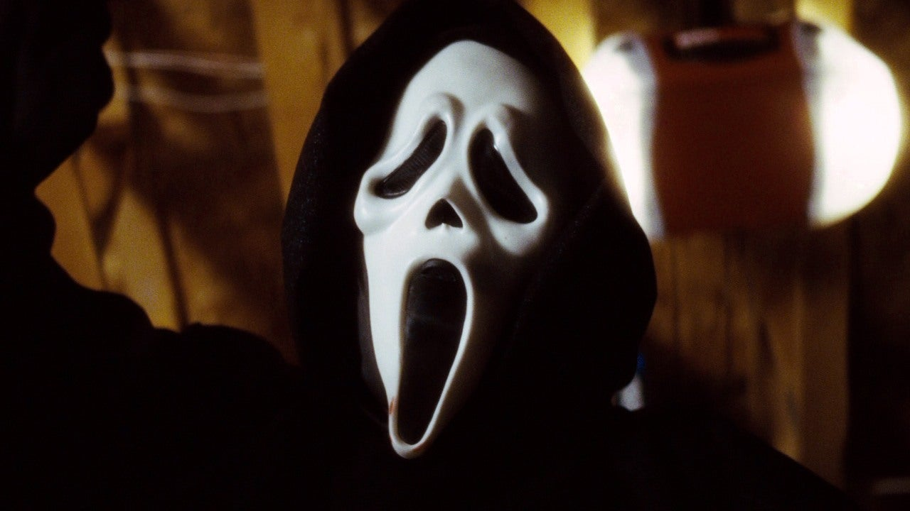
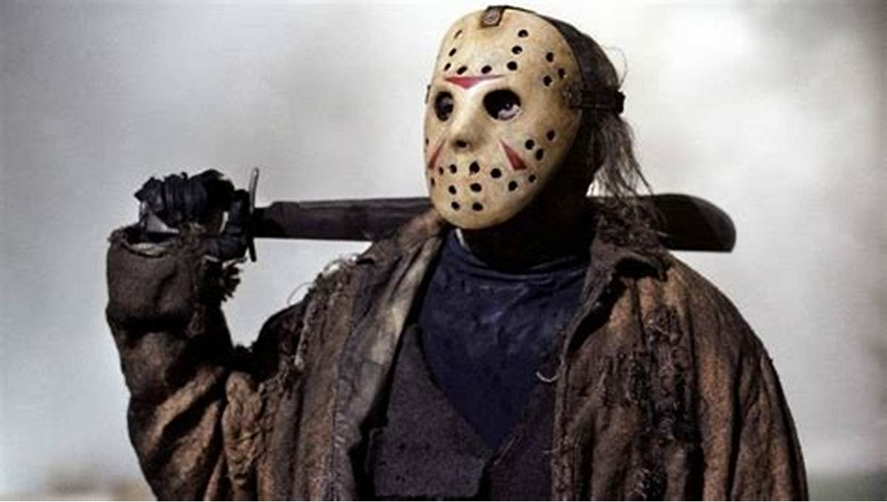
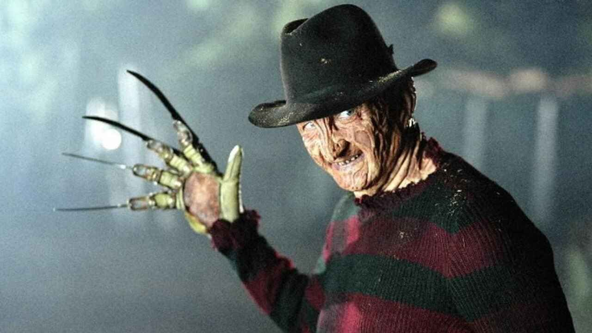
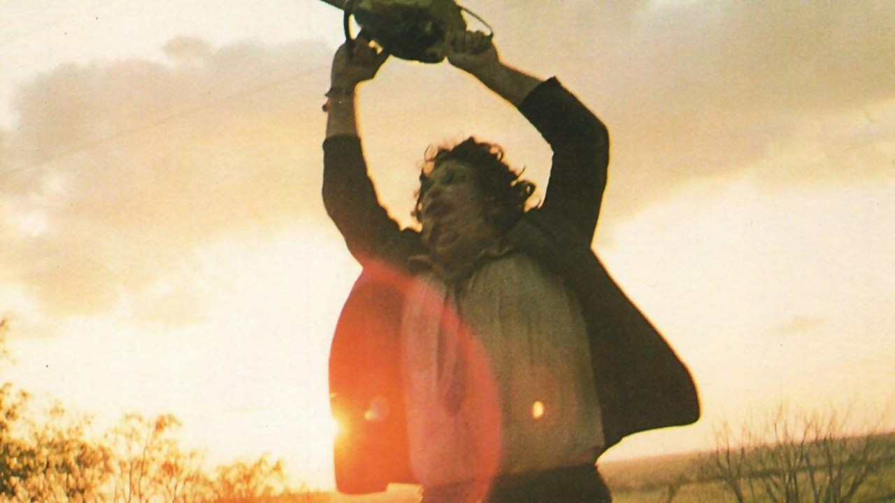
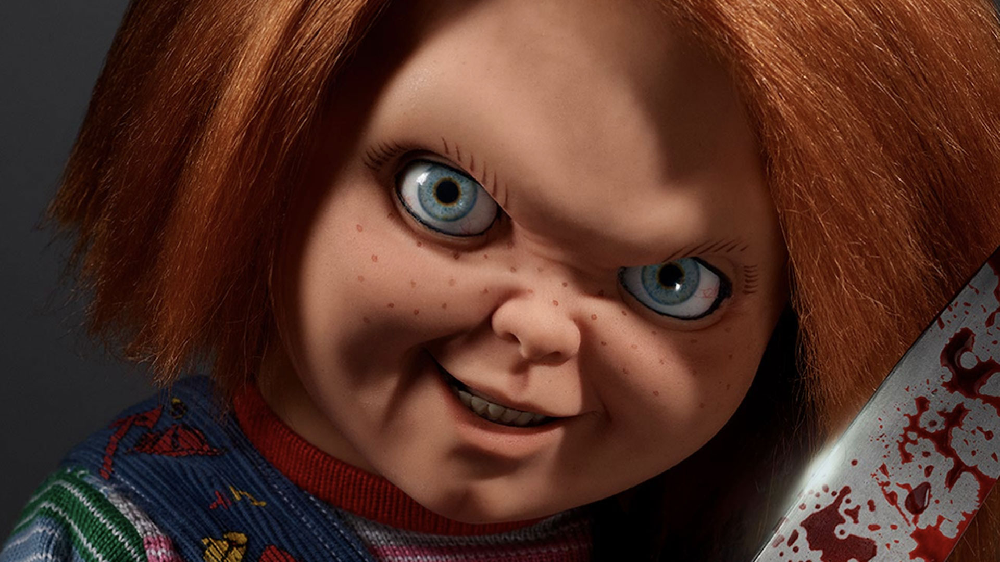
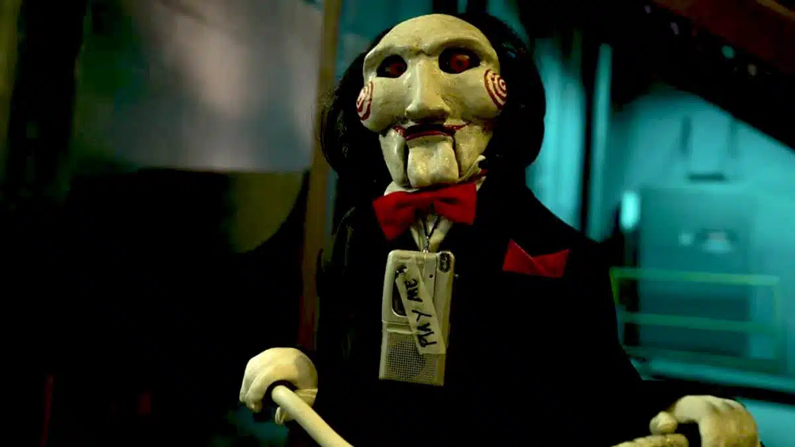
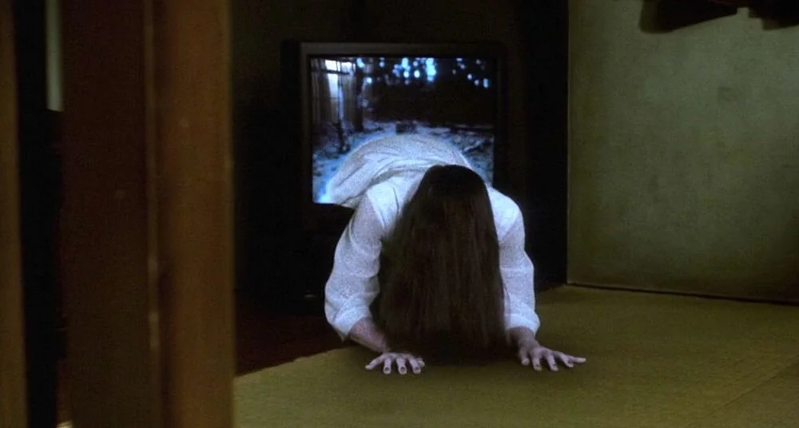
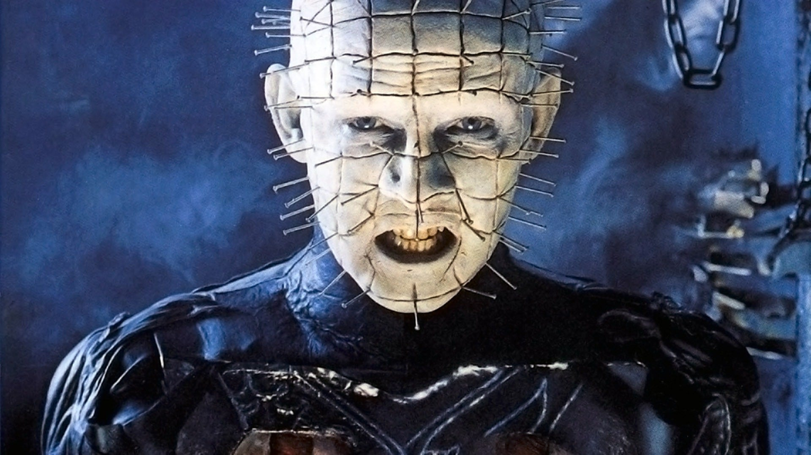

1. O Xenomorfo

O organismo perfeito, criado para matar. O Xenomorfo é uma criatura mortal, com instintos aguçados e um apetite voraz, impossível de ser controlado.
2. Michael Myers

O mal encarnado, um perseguidor incansável. Michael Myers é a própria personificação do horror, um assassino silencioso que ninguém consegue deter.
3. Ghostface
O mestre do horror moderno, que transforma o medo em jogo. Ghostface escolhe suas vítimas cuidadosamente, deixando terror em seu rastro.
4. Jason Voorhees
O imortal de Crystal Lake, uma lenda que nunca morre. Jason Voorhees volta dos mortos para punir quem invadir seu território.
5. Freddy Krueger
O senhor dos pesadelos, mestre da tortura. Freddy Krueger ataca suas vítimas enquanto elas dormem, tornando o descanso impossível.
6. Leatherface
O assassino da serra elétrica, um predador brutal. Leatherface persegue suas vítimas com selvageria, empunhando sua icônica serra elétrica.
7. Chucky
O brinquedo assassino, possuído por uma alma vingativa. Chucky pode parecer inofensivo, mas esconde um desejo insaciável de matar.
8. Jigsaw
O mestre dos jogos mortais, manipulador e calculista. Jigsaw não é um assassino direto, mas cria armadilhas mortais para ensinar suas lições sombrias. implacável. O Demogorgon emerge de uma dimensão sombria para caçar e espalhar terror no nosso mundo.
9. Sadako
O espírito vingativo do poço, uma assombração implacável. Sadako traz a morte aos que ousam assistir seu vídeo amaldiçoado.
10. O Cenobita
O guardião do sofrimento eterno. Cenobita, um ser infernal que emerge das profundezas para punir os curiosos, revelando horrores incompreensíveis.